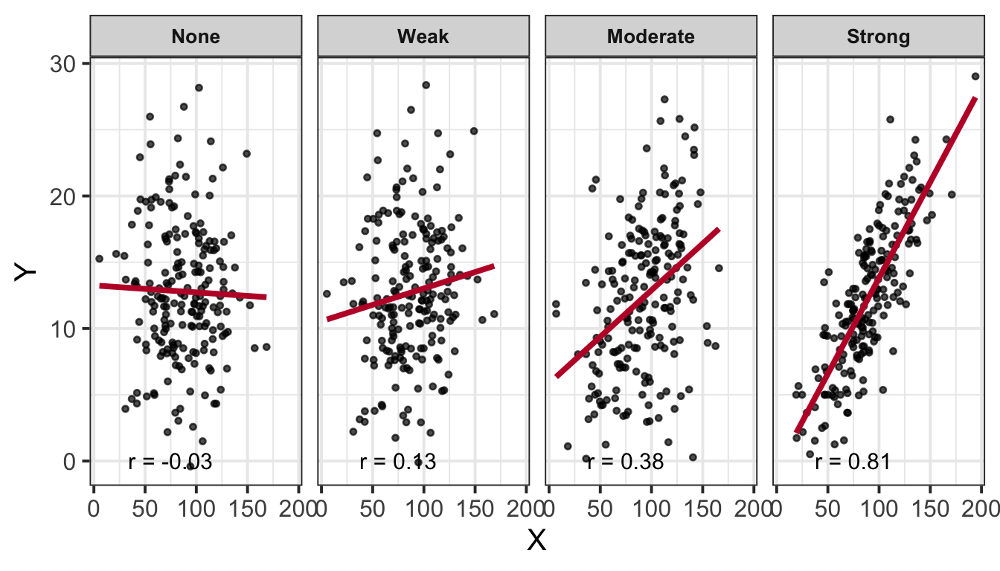
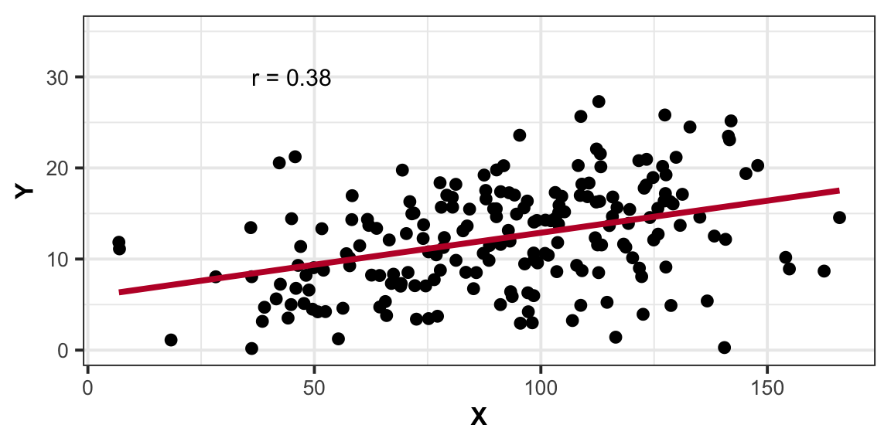
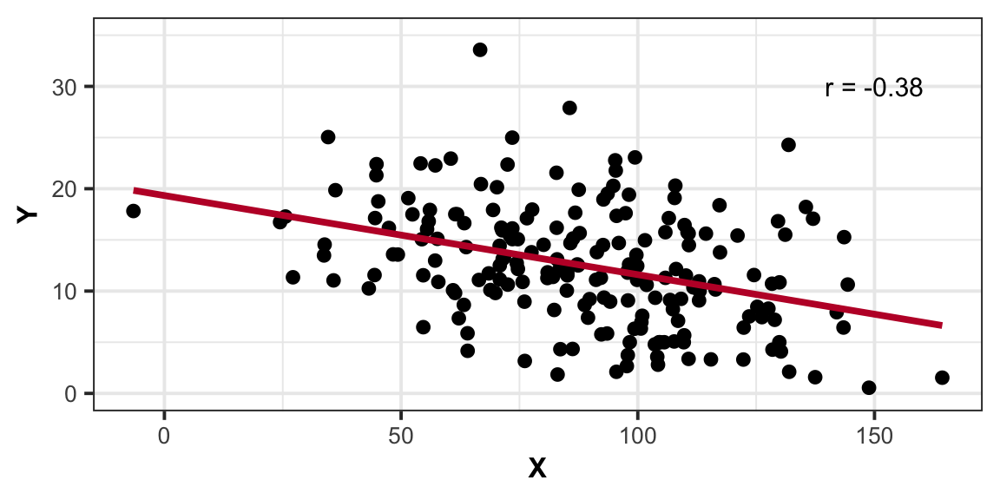

Numeric exploration of data involves examining and describing key statistics like mean, median, and standard deviation via descriptives tables, as well as assessing the associations among variables through correlation coefficients. Exploring our data numerically helps us to identify patterns and associations in the data. When doing so, it is important to contextualise the descriptive statistics within the scope of the research question and associated scales.
Descriptives tables
There are numerous packages available that allow us to pull out descriptive statistics from our dataset such as tidyverse and psych.
When we pull out descriptive statistics, it is useful to present these in a well formatted table for your reader. There are lots of different ways of doing this, but one of the most common (and straightforward!) is to use the kable() function from the package kableExtra.
This allows us to give our table a clear caption (via caption = "insert caption here", align values within columns e.g., center aligned via align = "??"), and we can also round to however many decimal places we desire (standard for APA is 2 dp; via digits = ??).
We can also add in the function kable_styling(). This is really helpful for customsing your table e.g., the font size, position, and whether or not you want the table full width (as well as lots of other things - check out the helper function!).
We can use the summarise() function to numerically summarise/describe our data. Some key values we may want to consider extracting are (though not limited to): the mean (via mean(), standard deviation (via sd()), minimum value (via min()), maximum value (via max()), standard error (via se()), and skewness (via skew()).
Numeric values only example
library(tidyverse)library(kableExtra)# using the pre-loaded iris dataset# taking the mean and standard deviation of sepal length via the summarize function# returning a table with a caption, where numbers are rounded to 2 dp# asking for a table that is not the full width of the window displayiris |>summarize(M_Length =mean(Sepal.Length),SD_Length =sd(Sepal.Length) ) |>kable(caption ="Sepal Length Descriptives (in cm)", digits =2) |>kable_styling(full_width =FALSE)
Sepal Length Descriptives (in cm)
M_Length
SD_Length
5.84
0.83
Categorical and numeric values example
library(tidyverse)library(kableExtra)# using the pre-loaded iris dataset# grouping by Species. NOTE: we can group by 2 variables - we would just separate by a comma within group_by( , )# taking the mean and standard deviation of sepal length via the summarize function# returning a table of sepal length grouped by species with a caption, where numbers are rounded to 2 dp# asking for a table that is not the full width of the window displayiris |>group_by(Species) |>summarize(M_Length =mean(Sepal.Length),SD_Length =sd(Sepal.Length) ) |>kable(caption ="Sepal Length (in cm) Grouped by Species Descriptives Table", digits =2) |>kable_styling(full_width =FALSE)
Sepal Length (in cm) Grouped by Species Descriptives Table
Species
M_Length
SD_Length
setosa
5.01
0.35
versicolor
5.94
0.52
virginica
6.59
0.64
The psych way
The describe() function will produce a table of descriptive statistics. If you would like only a subset of this output (e.g., mean, sd), you can use select() after calling describe() e.g., describe() |> select(mean, sd).
Numeric values only example
library(psych)library(kableExtra)# using the pre-loaded iris dataset# we want to get descriptive statistics of the iris dataset, specifically the sepal length column# we specifically want to select the mean and standard deviation from the descriptive statistics available (try this without including this argument to see what values you all get out)# returning a table with a caption, where numbers are rounded to 2 dp# asking for a table that is not the full width of the window displaydescribe(iris$Sepal.Length) |>select(mean, sd) |>kable(caption ="Sepal Length Descriptives (in cm)", digits =2) |>kable_styling(full_width =FALSE)
Sepal Length Descriptives (in cm)
mean
sd
X1
5.84
0.83
Categorical and numeric values example
Note that this is quite an overly complex way to return these summary statistics - using the tidyverse() way is much more intuitive and straightforward!
library(psych)library(kableExtra)# using the pre-loaded iris dataset# we want to get descriptive statistics of the iris dataset, specifically the sepal length column by Species# we want to return a matrix (hence mat = TRUE), then convert this to a dataframe# we specifically want to select the mean and standard deviation from the descriptive statistics available (try this without including this argument to see what values you all get out)# returning a table with a new column names of Group, Mean, SD; adding a caption; numbers are rounded to 2 dp# asking for a table that is not the full width of the window displaydescribeBy(Sepal.Length ~ Species, data = iris, mat =TRUE, digits =2) |>as.data.frame() |>rownames_to_column() |>select(group1, mean, sd) |>kable(col.names =c("Group", "Mean", "SD"), caption ="Sepal Length Descriptives (in cm)", digits =2) |>kable_styling(full_width =FALSE)
Sepal Length Descriptives (in cm)
Group
Mean
SD
setosa
5.01
0.35
versicolor
5.94
0.52
virginica
6.59
0.64
Correlation
Correlation Coefficient
The correlation coefficient - \(r_{(x,y)}=\frac{\mathrm{cov}(x,y)}{s_xs_y}\) - is a standardised number which quantifies the strength and direction of the linear association between two variables. In a population it is denoted by \(\rho\), and in a sample it is denoted by \(r\).
Values of \(r\) fall between \(-1\) and \(1\). How to interpret:
Size
More extreme values (i.e., the The closer \(r\) is to \(+/- 1\)) the stronger the linear association, and the closer to \(0\) a weak/no association. Commonly used cut-offs are:
Weak = \(.1 < |r| < .3\)
Moderate = \(.3 < |r| < .5\)
Strong = \(|r| > .5\)

Direction
The sign of \(r\) says nothing about the strength of the association, but its nature and direction:
Positive association means that values of one variable tend to be higher when values of the other variable are higher

Negative association means that values of one variable tend to be lower when values of the other variable are higher

Correlation Matrix
A correlation matrix is a table showing the correlation coefficients between variables. Each cell in the table shows the association between two variables. The diagonals show the correlation of a variable with itself (and are therefore always equal to 1).
In R We can create a correlation matrix by giving the cor() function a dataframe. It is important to remember that all variables must be numeric. One way to check this is by using the str() argument.
Let’s check the structure of the iris dataset to ensure that all variables are numeric:
We can see that the variable Species in column 5 is a factor - this means that we cannot include this in our correlation matrix. Therefore, we need to subset, or, in other words, select specific columns. We can do this either giving the column numbers inside [], or using select(). In our case, we want the variables in columns 1 - 4, just not 5.
If you had NA values within your dataset, you could choose to remove these NAs using na.rm = TRUE inside the cor() function.
# select only the columns we want by variable name, and pass this to cor()iris |>select(Sepal.Length, Sepal.Width, Petal.Length, Petal.Width) |>cor() |>round(digits =2)